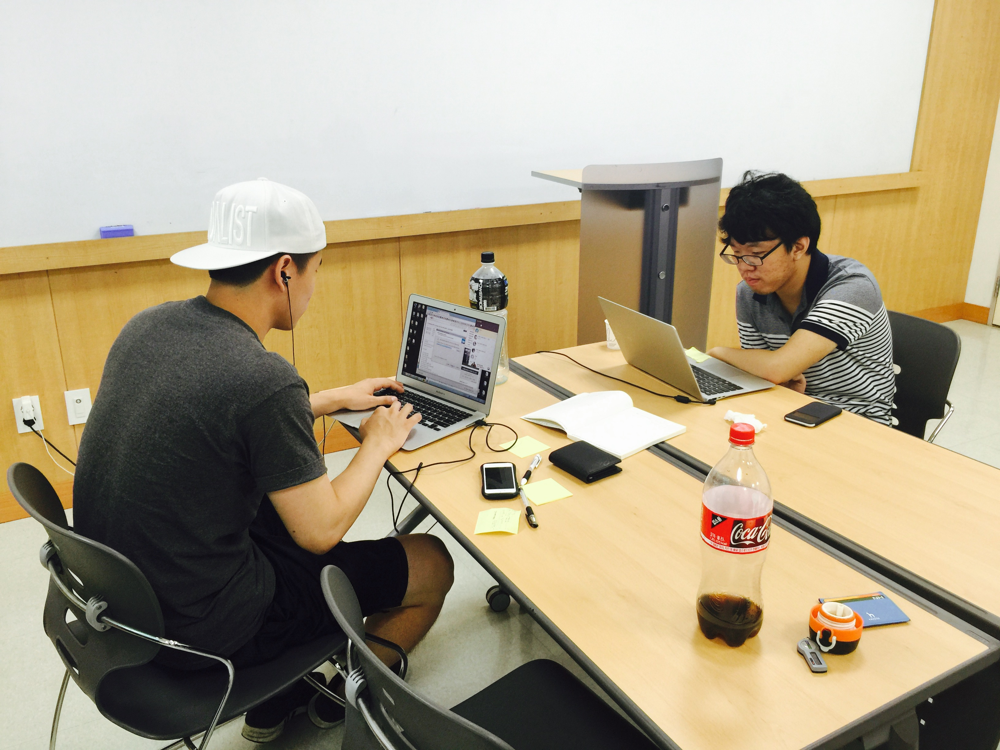
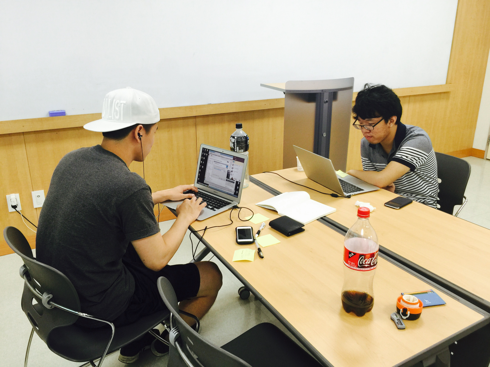
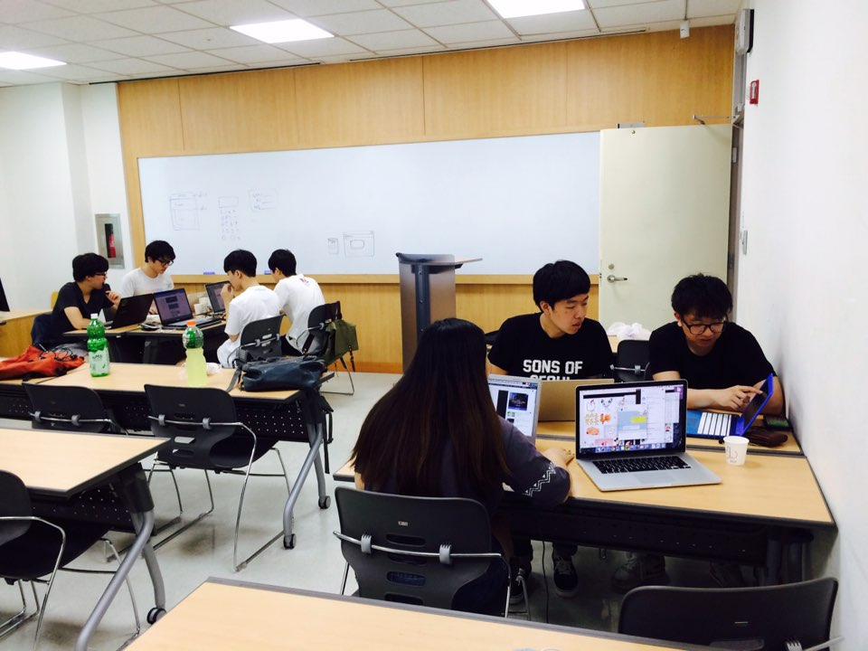
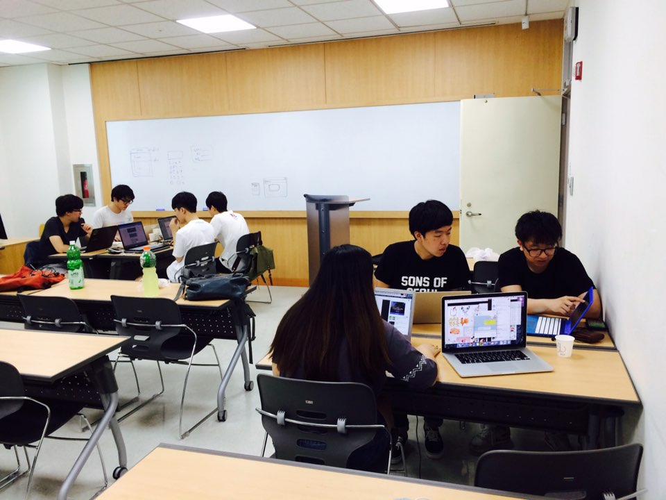
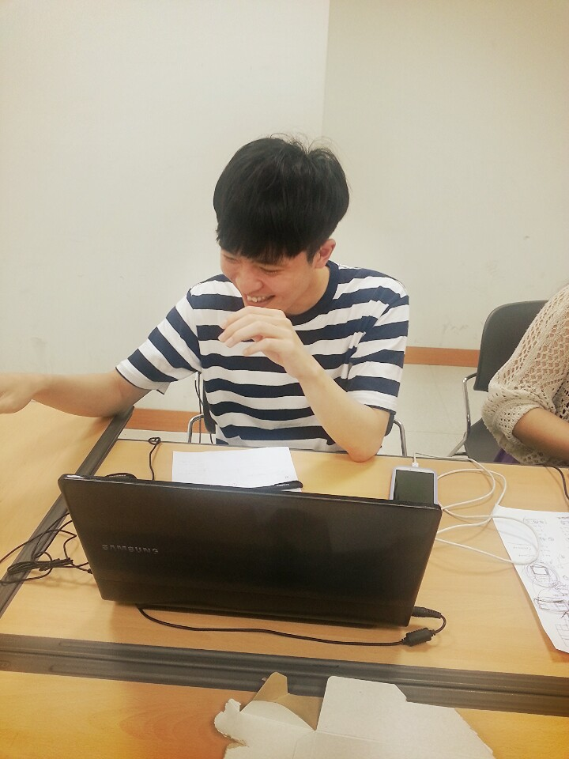
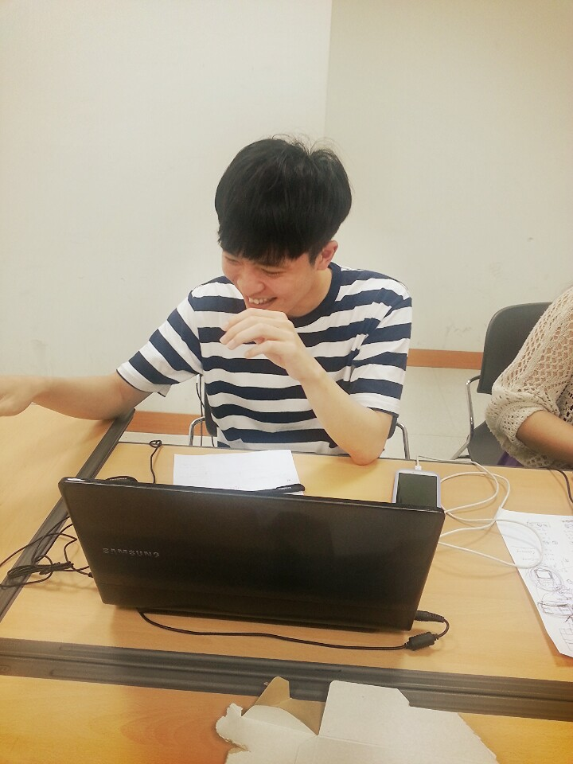
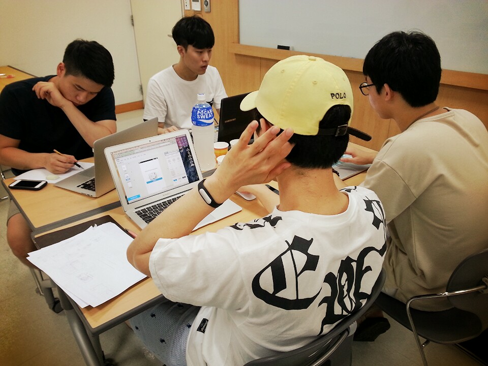
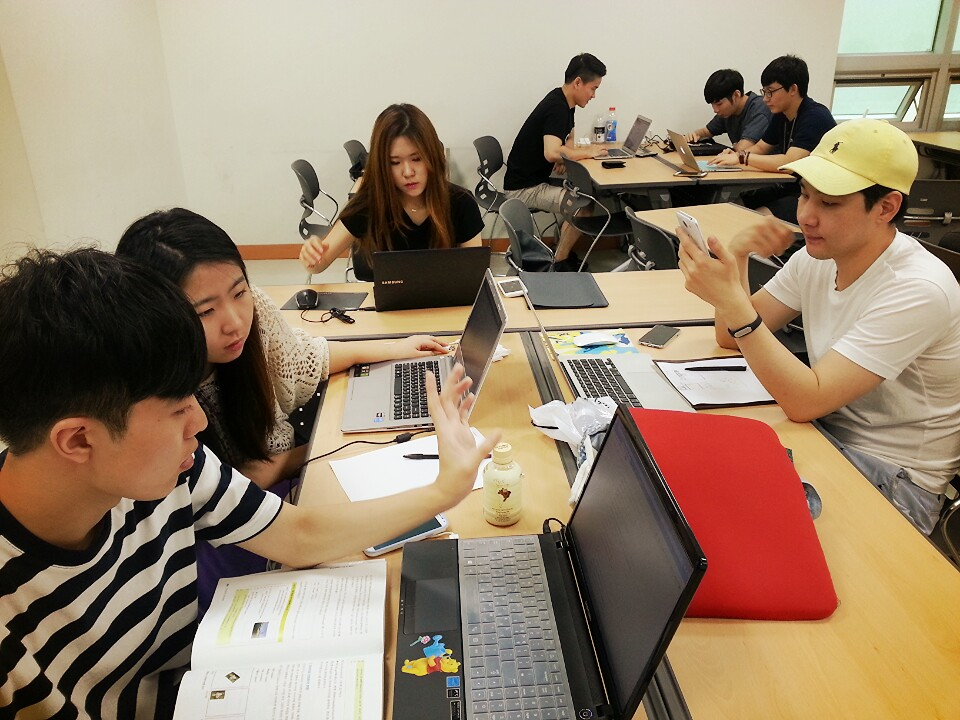
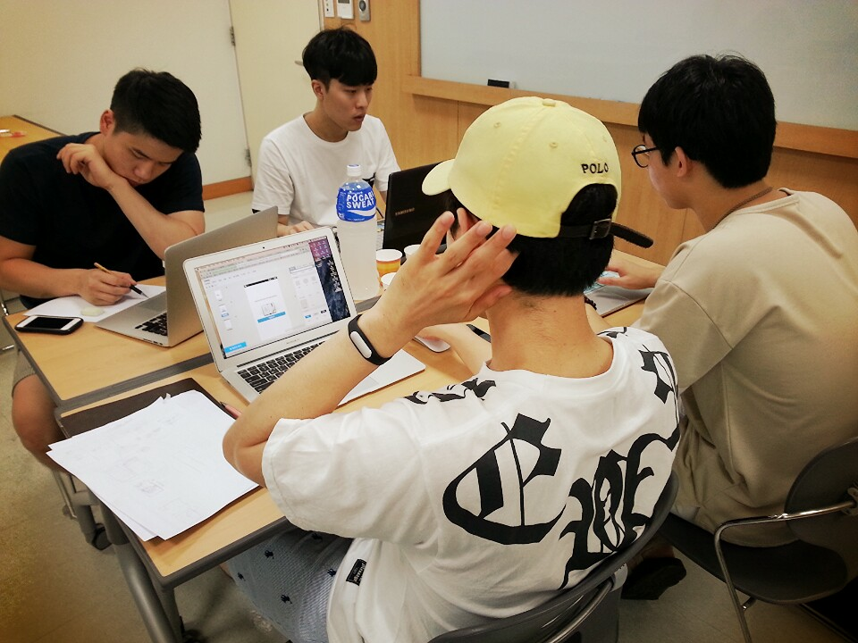
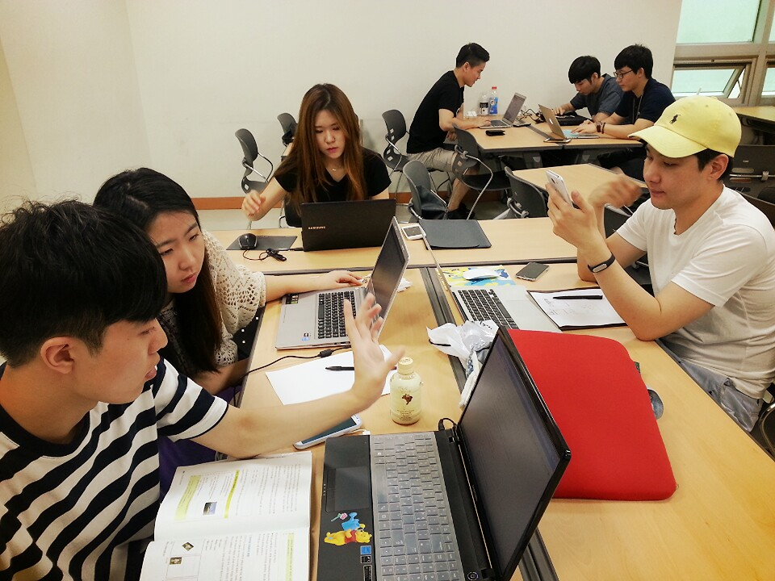

HACK WEEK
HACK WEEK의 취지
4일동안 매번 다른 팀으로 구성하여 동아리 내부의 기획자, 디자이너, 개발자 서로간의 스타일과 역량을 파악하고 짧게 개발 프로젝트의 프로세스를 경험하기 위해 해커톤을 진행하였습니다. 4일(월~목) 간의 해커톤은 고려대학교 우정정보통신관에서 오전 11시부터 오후 5시까지 6시간 동안 4번 진행하였습니다. HACK WEEK은 Naver D2의 후원을 받아 진행했습니다.

 

 

 



 




HACK WEEK 결과물
6시간이라는 짧은 시간동안 해커톤을 진행하다 보니 많은 팀들이 완성에 실패하였습니다. 기획만 3시간 넘게 하며 시간을 보내는 팀도 있었고, 디자인 완성이 마감 1시간 전에 완료되는 팀도 있었으며, 개발자의 역량을 생각하지 않은 기획으로 실제 구현에 실패한 팀도 있었습니다. 완성에 실패한 팀은 아쉽지만 짧은 미니 해커톤을 통해 프로젝트의 전주기를 짧게나마 경험하고 많은 배움을 얻어갈 수 있었습니다. 아래는 완성에 성공한 팀들의 결과물입니다.
진화론 묵찌빠. 팀원: 김무녕, 윤도현, 조영준
앱 다운로드(조영준) 우리는 고민을 했다. 짧은시간에 무얼만들까? 각자의 역량을 확인하고 빠르게 즐겁게 할 수 있는 무언가가 있을지 고민했다. 우리는 두렵지 않았다. 우리에겐 5시간의 시간과 3개의 두뇌가 있었기때문에.
일사천리로 진행했다. 게임으로 카테고리를 정했고, 가위바위보에서 묵찌빠로 아이데이션을 진행했다. 어떻게 승부욕을 자극할 수 있을지에 대해서 고민중에 ‘진화론’을 생각했다. 승부에 이기면 한단계,한단계 진화하는 게임이다.팀원들과 즐겁게 소통하며 만들었다. 짧았지만 처음으로 만난 친구들과 의미있는 시간이었다.
(윤도현) 게임으로 결정하고 가위바위보에서 묵찌빠로 아이디어가 진행되었다. 가위바위보 로직은 많이 있지만 생각보다 묵찌빠의 경우 고려해야 할 사항들이 많아 알고리즘을 짜는데 조금 애먹었지만 결국 완성할 수 있었다.
6시간이란 짧은 시간의 해커톤을 처음 진행해 보는 것이라 그랬는지 시간배분에 아쉬움이 조금 남았다. 디자이너님께서 충분히 디자인을 주셨지만 개발시간이 걸려 디자인을 다 입히지 못한것이 아쉽다. 하지만 결국 완성을 하였고 또 동작하는 것을 보니 매우 뿌듯했다.
Push Me. 팀원 : 오승준, 이준택, 한 윤
앱 다운로드(한윤) 간단한 터치 조작 게임 애플리케이션에서 모티브를 얻어서 Push Me 라는 간단한 안드로이드용 게임 앱을 만들어 보기로 하였다. 개발 도구는 안드로이드 프로그래밍을 전혀 모르는 사람도 쉽게 게임을 만들 수 있도록 해주는 Game Salad 라는 툴을 이용하였다.
해커톤인만큼 빠른 시간 내에 결과물을 내는 것을 목표로 했기 때문에 간단한 게임을 만들어 보기로 하였고, 안드로이드 경험 개발이 없었기 때문에 이미 많은 부분이 built-in 되어 있는 툴을 쓸 수 밖에 없었다. 기획에만 2시간 정도를 사용했고, 나머지 시간은 전부 개발에 쏟았다. 우리가 만들었던 게임은 랜덤하게 바뀌는 스마일 아이콘을 순발력 있게 터치를 해야 스코어를 낼 수 있는 방식을 채택했다.
(이준택) 화면의 중앙에 캐릭터가 나오는데 랜덤한 주기로 캐릭터의 얼굴이 웃다가 찡그리다가를 반복한다. 캐릭터가 웃을 때 터치를 해야 하고 찡그릴때 터치를 하면 게임이 종료된다. 웃을 때 터치 한 횟수 만큼 스코어가 쌓이게 된다.
6시간이라는 짧은 시간을 가지고 프로젝트를 시작 했기에 최대한 빨리 아이디어가 나와야 했다. flappy bird 이후로 원 버튼 게임이 많이 나온 것에서 모티브를 얻어 원 버튼 게임 어플리케이션을 만들자고 제안을 하였다. 버튼 하나만 사용하는 게임에 단시간에 완성하기 위하여 최대한 간단하게 기획을 하였다.
쌍욕 플레이어. 팀원 : 이준택 , 이용진 , 김한홍 , 심소영
앱 다운로드(이준택) 16개 정사각형 모양의 패드가 있는데 버튼을 누를 경우 각각 다른 욕이 재생된다. 위쪽에 버튼들로 각각 욕들에 대해 피치 조정을 하거나 리버브를 넣을 수 있다. 오른쪽 버튼으로 백그라운드에 비트를 넣을 수 있는데 비트 위에 각각의 욕을 틀어줌으로써 음악을 만드는 듯한 재미 요소를 더했다.
아무리 친구라지만 서로 의견이 안맞을 경우도 있고 친구때문에 기분이 나빠지는 경우도 있을 것이다. 그럴 때 친구에게 욕이라도 한마디 하고 싶지만 마음이 약한 사람은 차마 그러지 못하고 웃어 넘기는 경우가 발생한다. 이런 상황에서 욕을 대신 해 줄 어플을 만드는 것이 어떨까 하는것이 우리의 취지였다. 서로 다른 16개의 욕을 직접 녹음하고 재미 요소를 더해 줄 기능들을 추가하였다. 서로 욕도 녹음하고 플레이도 해 보면서 재밌게 프로젝트를 진행할 수 있었다.
점심메뉴 이상형월드컵, 팀원 : 김혜진, 김희수, 장부루, 정영훈
(장부루)
누구나 아는 이상형월드컵입니다
점심메뉴선택에 장애가 있는 사람들에게 쉬운선택을 할수있도록 유도합니다.
개발과정에서 기존의 이상형월드컵에 추가적인 기능을 넣으려다 보니 생각보다 어렵게진행했습니다.
하지만 해커톤 첫주에 진행한 만큼 결과적으론 만족감이 있었습니다
누가계와잤을까. 팀원 : 장부루, 김연우, 신만수, 윤도현
앱 다운로드(장부루)
위 프로젝트는 복불복 게임입니다. 술래 혹은 벌칙을 주어야할때 술래가 될사람을 정할때 유용합니다.
처음 프로젝트를 기획한 이유는 8시간이라는 한정된 시간동안 만드어야하므로 간단한 프로젝트를 기획하였고, 자칫 식상할 수 있는 복불복게임을 창의적으로 만들어보고자 '누가 계와 잤을까'라는 이름으로 스토리를 붙여 기획하였습니다
기획단계에서 저희끼리 너무 신났기때문에 기분좋게 해커톤을 마칠 수 있었습니다.
(윤도현) 아이디어도 즐겁게, 개발도 즐겁게 진행하고자 했다. 기획단계에서 다들 너무 신나서 기획을 하였고 스토리라인도 탄탄하게 짤 수 있었다. 또한, 충분히 이야기가 되고, 개발명세도 미리 작성을 하고 시작하니 그 어느때보다도 6시간을 알차게 쓸 수 있었다. 스토리와 디자인이 큰 부분을 차지하는 어플리케이션이었는데 스토리는 탄탄했지만 디자이너가 없어 조금 아쉬웠다.
팀을 짜면서, 아이디어 피칭을 하면서, 개발을 하면서도 막힘없이 진행했고 다들 만족하면서 진행 할 수 있어서 매우 좋았다.